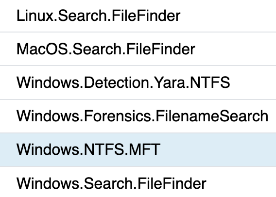
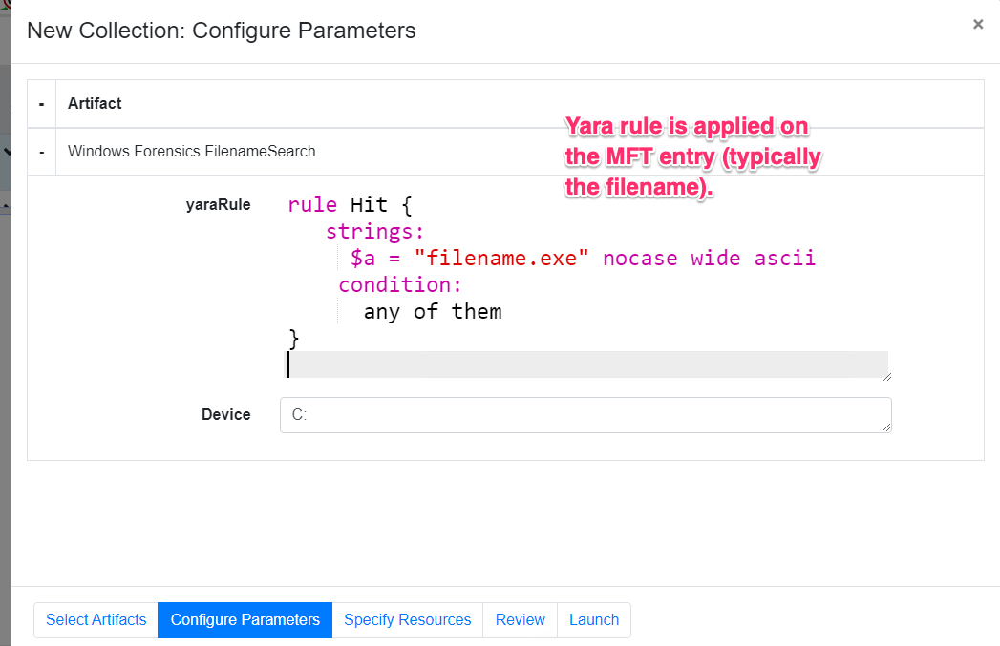
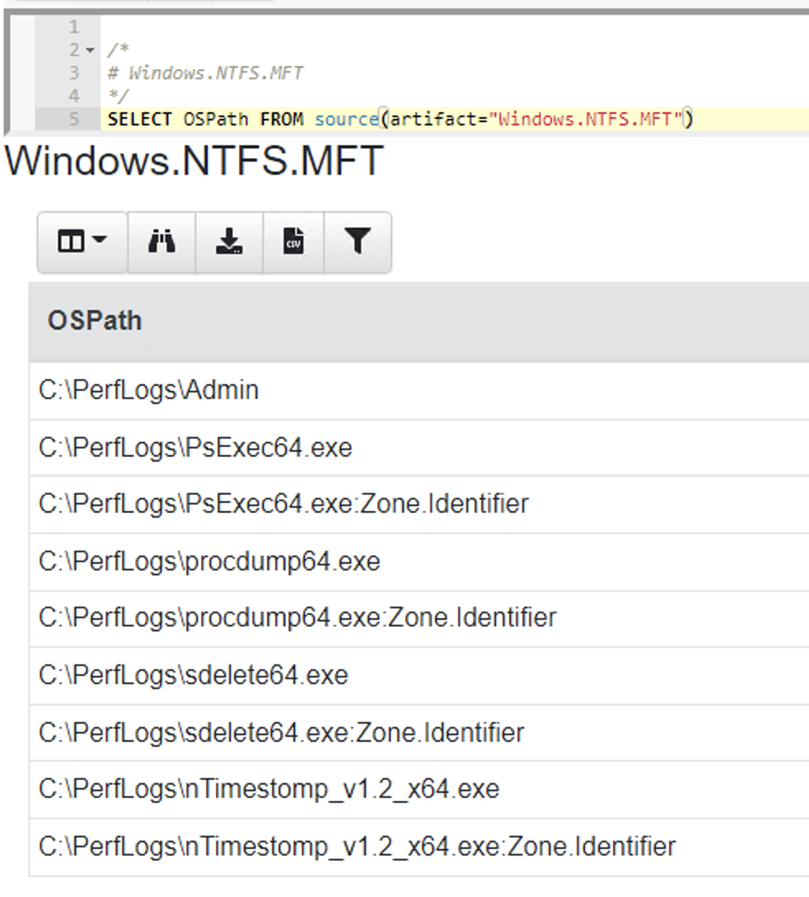
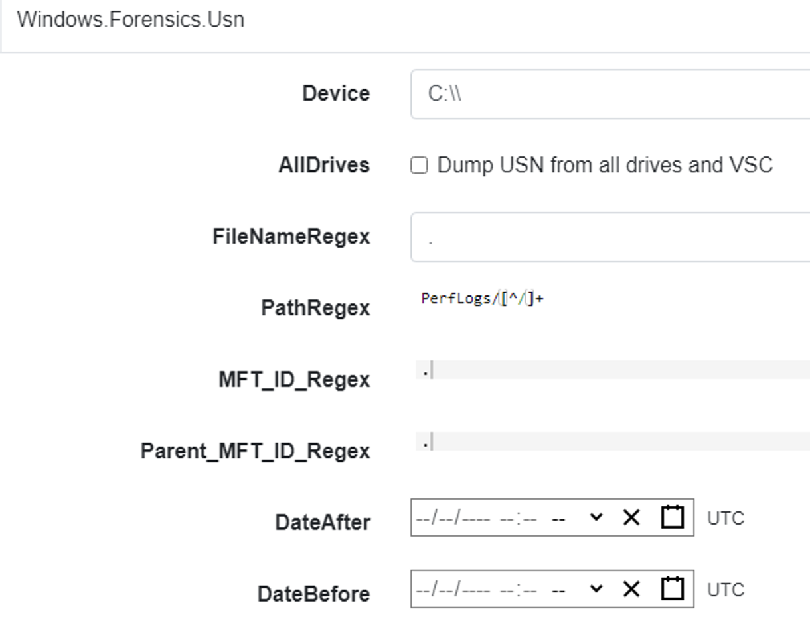
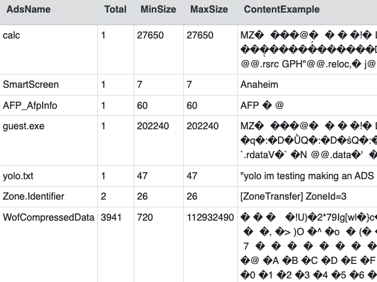

<!-- .slide: class="title" --> # Filesystem Forensics ## Forensic Analysis with VQL --- <!-- .slide: class="content " --> ## Module overview * Velociraptor implements many forensic capabilities in VQL * This module will focus on typical forensic analysis and deep inspection capabilities. We will learn how to put the capabilities together to produce effective artifacts and when to use those.
<!-- .slide: class="content small-font" --> ## Searching for files - glob() * One of the most common operations in DFIR is searching for files efficiently. * Velociraptor has the `glob()` plugin to search for files using a glob expression. * Glob expressions use wildcards to search the filesystem for matches. * Paths are separated by / or \ into components * A `*` is a wildcard match (e.g. `*.exe` matches all files ending with .exe) * Alternatives are expressed as comma separated strings in `{}` e.g. `*.{exe,dll,sys}` * A `**` denotes recursive search. `e.g. C:\Users\**\*.exe` --- <!-- .slide: class="content small-font" --> ## Exercise: Search for exe * Search user’s home directory for binaries. ```sql SELECT * FROM glob(globs='C:\\Users\\**\\*.exe') ``` Note the need to escape `\` in strings. You can use `/` instead and specify multiple globs to search all at the same time: ```sql SELECT * FROM glob(globs=['C:/Users/**/*.exe', 'C:/Users/**/*.dll']) ``` --- <!-- .slide: class="content" --> ## Filesystem accessors * Glob is a very useful concept to search hierarchical trees * Velociraptor supports direct access to many different such trees via accessors (essentially FS drivers): * `file` - uses OS APIs to access files. * `ntfs` - uses raw NTFS parsing to access low level files * `reg` - uses OS APIs to access the windows registry * `raw_reg` - search in a registry hive * `zip` - Search inside zip files --- <!-- .slide: class="content small-font" --> ## The registry accessor * Uses the OS API to access the registry * Top level consists of the major hives (`HKEY_USERS` etc) * Values appear as files, Keys appear as directories * Default value is named “@” * Value content is included inside the Data attribute * Can escape components with / using quotes `HKLM\Microsoft\Windows\"http://www.microsoft.com/"` --- <!-- .slide: class="content small-font" --> ## The registry accessor * The `OSPath` column includes the key (as directory) and the value (as a filename) in the path. * The Registry accessor also includes value contents if they are small enough in the `Data` column. --- <!-- .slide: class="content small-font" --> ## Exercise - RunOnce artifact * Write an artifact which hashes every binary mentioned in Run/RunOnce keys. * “Run and RunOnce registry keys cause programs to run each time that a user logs on.” * https://learn.microsoft.com/en-us/windows/win32/setupapi/run-and-runonce-registry-keys * You can test this by adding a key ```text REG ADD "HKCU\SOFTWARE\Microsoft\Windows\CurrentVersion\Run" /v Notepad /t REG_SZ /d "C:\Windows\notepad.exe" ``` * Can you think of limitations? --- <!-- .slide: class="content small-font" --> ## Exercise - RunOnce artifact <div class="solution solution-closed"> ``` LET RunGlob = '''HKCU\SOFTWARE\Microsoft\Windows\CurrentVersion\Run\*''' SELECT Name, Mtime, Data.value AS Data FROM glob(globs=RunGlob, accessor="registry") ``` </div> --- <!-- .slide: class="content optional small-font" data-background-color="antiquewhite" --> ## Exercise: Hash all files provided in the globs * Create an artifact that hashes files found by user provided globs. * BONUS: * Support number of concurrent threads. * Accept a list of hashes and filter on those. --- <!-- .slide: class="title" --> # Searching data ## Scanning file contents --- <!-- .slide: class="content small-font" --> ## Searching data * A powerful DFIR technique is searching bulk data for patterns * Searching for CC data in process memory * Searching for URLs in process memory * Searching binaries for malware signatures * Searching registry for patterns Bulk searching helps to identify evidence without needing to parse file formats --- <!-- .slide: class="content small-font" --> ## YARA - The swiss army knife * YARA is a powerful keyword scanner * Uses rules designed to identify binary patterns in bulk data * YARA is optimized to scan for many rules simultaneously. * Velociraptor supports YARA scanning of bulk data (via accessors) and memory. `yara()` and `proc_yara()` --- <!-- .slide: class="content small-font" --> ## YARA rules Yara rules has a special domain specific language ```yara rule X { strings: $a = “hello” nocase $b = “Goodbye” wide $c = /[a-z]{5,10}[0-9]/i condition: $a and ($b or $c) } ``` --- <!-- .slide: class="content small-font" --> ## Exercise: drive by download * You suspect a user was compromised by a drive by download (i.e. they clicked and downloaded malware delivered by mail, ads etc). * You think the user used the Edge browser but you have no idea of the internal structure of the browser cache/history etc. * Write an artifact to extract potential URLs from the Edge browser directory (also where is it?) --- <!-- .slide: class="content small-font" --> ## Step 1: Figure out where to look Looks like somewhere in `C:\Users\<name>\AppData\Local\Microsoft\Edge\**` ``` LET Globs = "C:/Users/Administrator/AppData/Local/Microsoft/Edge/**" SELECT OSPath FROM glob(globs=Globs) ``` --- <!-- .slide: class="content small-font" --> ## Step 2: Recover URLs * We don't exactly understand how Edge stores data but we know roughly what a URL is supposed to look like! * Yara is our sledgehammer ! ``` rule URL { strings: $a = /https?:\/\/[a-z0-9\/+&#:\?.-]+/i condition: any of them } ``` --- <!-- .slide: class="content small-font" --> ## Step 3: Let’s do this! <div class="solution solution-closed"> ``` LET Globs = "C:/Users/Administrator/AppData/Local/Microsoft/Edge/**" LET URLRule = ''' rule URL { strings: $a = /https?:\/\/[a-z0-9\/+&#:\?.-]+/i condition: any of them } ''' SELECT * FROM foreach(row={ SELECT OSPath FROM glob(globs=Globs) }, query={ SELECT OSPath, String.Data AS Hit FROM yara(files=OSPath, rules=URLRule, number=10000000) }) ``` </div> --- <!-- .slide: class="content small-font" --> ## YARA best practice * You can get yara rules from many sources (threat intel, blog posts etc) * YARA is really a first level triage tool: * Depending on signature many false positives expected * Some signatures are extremely specific so make a great signal * Try to collect additional context around the hits to eliminate false positives. * Yara scanning is relatively expensive! consider more targeted glob expressions and client side throttling since usually YARA scanning is not time critical. --- <!-- .slide: class="content small-font" --> ## Uploading files * Velociraptor can collect file data. * Over the network * Locally to a collection zip file. * Driven by VQL The `upload()` VQL function copies a file using an accessor to the relevant container --- <!-- .slide: class="content small-font" --> ## Exercise: Upload Recent executables * Collect all recent executables in users’ home directory * Written in the past week * Write your own VQL by combining `glob()` and `upload()` <div class="solution solution-closed"> ``` LET Globs = "C:/Users/Administrator/**/*.exe" SELECT Mtime, OSPath, upload(file=OSPath) AS Upload FROM glob(globs=Globs) WHERE Mtime > now() - 7 * 24 * 60 * 60 ``` </div>
<!-- .slide: class="content" --> ## NTFS Overview * NTFS is the file system in all modern Windows operating systems. * Feature packed with a design focused on storage optimization and resilience. * NTFS implements Journalling to record metadata changes to track state and integrity of the file system. * Allows for recovery after system crashes to avoid data loss * File System objects referenced in a Master File Table (MFT) --- <!-- .slide: class="content" --> ## New Technology File System * In NTFS, the Master File Table (MFT) is at the heart of the file system. A structured database that stores metadata entries for every file and folder. * Every object gets an entry within the MFT. Each entry is usually 1024 bytes long. Contains a series of attributes that fully describe the object. --- <!-- .slide: class="content" --> ## MFT entries contain attributes <div class="container small-font"> <div class="col"> ## File entry examples * $STANDARD_INFORMATION * $FILE_NAME (Windows long name) * $FILE_NAME (short name) * $DATA * $DATA (alternate data stream sometimes) </div> <div class="col"> ## Folder entry examples * $STANDARD_INFORMATION * $FILE_NAME (Windows long name) * $FILE_NAME (short name) * $INDEX_ROOT * $INDEX_ALLOCATION (sometimes) </div> --- <!-- .slide: class="content small-font" --> ## NTFS Analysis Velociraptor offers a number of plugins to access detailed information about NTFS: * `parse_mft()`: parses each MFT entry and returns high level metadata about the entry - including reconstruct the full path of the entry by traversing parent MFT entries. * `parse_ntfs()`: Given an MFT ID this function will display information about the various streams (e.g. `$DATA`, `$Filename` etc) * `parse_ntfs_i30()`: This scans the `$i30` stream in directories to recover potentially deleted entries. --- <!-- .slide: class="content small-font" --> ## Finding suspicious files Parse the MFT using `Windows.NTFS.MFT` * Common DFIR use case is finding files * File name * Path * File type * Content * Velociraptor plugins * glob * parse_mft * yara * other content based plugins  --- <!-- .slide: class="content" --> ## Windows.Forensics. FilenameSearch * Apply yara on the MFT * fast yara * simple string based * filename / top level folder only * comma separated * Crude and less control * Verbose results  --- <!-- .slide: class="content" --> ## Windows.NTFS.MFT <div class="container small-font"> <div class="col"> * Parses MFT * Easy to use * Filters * Path * File name * Drive * Time bounds * Size * Performance optimised </div> <div class="col"> <img src="../../modules/ntfs_forensics/Windows.NTFS.MFT.png" style="bottom: inherit" class="inset" /> </div> </div> --- <!-- .slide: class="content" --> ## Exercise - Generate test data To automatically prep your machine run this script: ```powershell ### NTFS exercise setup ## 1. download some files to test various content and add ADS to simulate manual download from a browser $downloads = ( "https://live.sysinternals.com/PsExec64.exe", "https://live.sysinternals.com/procdump64.exe", "https://live.sysinternals.com/sdelete64.exe" ) foreach ( $url in $downloads){ "Downloading " + $Url $file = Split-Path $Url -Leaf $dest = "C:\PerfLogs\" +$file $ads = "[ZoneTransfer]`r`nZoneId=3`r`nReferrerUrl=https://18.220.58.123/yolo/`r`nHostUrl=https://18.220.58.123/yolo/" + $file + "`r`n" Remove-Item -Path $dest -force -ErrorAction SilentlyContinue Invoke-WebRequest -Uri $Url -OutFile $dest -UseBasicParsing Set-Content -Path $dest":Zone.Identifier" $ads } ``` --- <!-- .slide: class="content" --> ## More setup ```powershell ## 2.Create a PS1 file in staging folder (any text will do but this is powershell extension) echo "Write-Host ‘this is totally a resident file’" > C:\Perflogs\test.ps1 ## 3.Modify shortname on a file fsutil file setshortname C:\PerfLogs\psexec64.exe fake.exe ## 4. Create a process dumpOpen calculator (calc.exe) calc.exe ; start-sleep 2 C:\PerfLogs\procdump64.exe -accepteula -ma win32calc C:\PerfLogs\calc.dmp get-process | where-object { $_.Name -like "*win32calc*" } | Stop-Process ## 5. Create a zip file in staging folder Compress-Archive -Path C:\PerfLogs\* -DestinationPath C:\PerfLogs\exfil.zip -CompressionLevel Fastest ## 6. Delete dmp,zip and ps1 files - deleted file discovery is important for later! Remove-Item -Path C:\PerfLogs\*.zip, C:\PerfLogs\*.dmp, C:\PerfLogs\*.ps1 ``` Note: * Download and copy to staging folder C:\PerfLogs\ * https://live.sysinternals.com/procdump64.exe * https://live.sysinternals.com/sdelete64.exe * https://live.sysinternals.com/psexec64.exe * Add ADS to simulate Mark of the Web Create a PS1 file in staging folder (any text will do but this is powershell extension) ``` echo "Write-Host ‘this is totally a resident file’" > C:\Perflogs\test.ps1 ``` Modify short name on a file ``` fsutil file setshortname C:\PerfLogs\psexec64.exe fake.exe ``` Create a process dump Open calculator (`calc.exe`) ``` C:\PerfLogs\procdump64.exe -accepteula -ma calc C:\PerfLogs\calc.dmp ``` Create a zip file in staging folder - open `C:\Perflogs in Explorer` highlight and select: Send to > Compressed (zipped) folder. Delete `dmp.zip` and `ps1` files - deleted file discovery is important for later! ``` Remove-Item -Path C:\PerfLogs\*.zip, C:\PerfLogs\*.dmp, C:\PerfLogs\*.ps1 ``` --- <!-- .slide: class="content" --> ## Exercise <div class="container small-font"> <div class="col"> * Find contents of `C:\Perflogs` * Review metadata of objects * Explore leveraging filters * to target specific files or file types * to find files limited to a time frame * Can you find the deleted files? * You may get lucky and have an unallocated file show. * Try `Windows.Forensics.Usn` with filters looking for suspicious extensions in our staging location! </div> <div class="col">  </div> </div> --- <!-- .slide: class="content small-font" --> ## The USN journal * Update Sequence Number Journal or Change journal is maintained by NTFS to record filesystem changes. * Records metadata about filesystem changes. * Resides in the path $Extend\$UsnJrnl:$J  --- <!-- .slide: class="content" --> ## USN Journal * Records are appended to the file at the end * The file is sparse - periodically NTFS will remove the range at the start of the file to make it sparse * Therefore the file will report a huge size but will actually only take about 30-40mb on disk. * When collecting the journal file, Velociraptor will collect the sparse file. --- <!-- .slide: class="content" --> ## Exercise - Windows.Forensics.Usn <div class="container small-font"> <div class="col"> Target `C:\PerfLogs` with the `PathRegex` field. * typically the USN journal only records filename and MFTId and ParentMFTId record. Velociraptor automatically reconstructs the expected path so the user can filter on path. * This artifact uses FullPath results with “/”. </div> <div class="col">  </div> </div> --- <!-- .slide: class="full_screen_diagram" --> ## Exercise - UsnJ solution * There are many entries even for a simple file action like download to disk.  --- <!-- .slide: class="content" --> ## Exercise - UsnJ solution <div class="small-font"> * But these are simple to detect when you know what to look for! <div class="container"> <div class="col">  </div> <div class="col">  </div> </div> </div> --- <!-- .slide: class="content" --> ## Advanced NTFS: Alternate Data Stream <div class="container small-font"> <div class="col"> * Most browsers attach an ADS to files downloaded from the internet. * Use the VFS viewer to view the ADS of downloaded files. * Use ADS Hunter to discover more interesting ADS * Use `Windows.Analysis. EvidenceOfDownload` to identify downloaded files and unpacked ZIP files. </div> <div class="col">  </div> </div> Note: The inset shows typical frequency analysis of ADS naturally occurring What is the `Wof` stuff? https://devblogs.microsoft.com/oldnewthing/20190618-00/?p=102597
<!-- .slide: class="content small-font" --> ## Volume Shadow Copies NTFS allows for a special copy on write snapshot feature called `Volume Shadow Copy`. Create a VSS copy on your own machine using WMI: ```sh wmic shadowcopy call create Volume='C:\' ``` Ensure your system contains a volume shadow copy ```bash vssadmin list shadows ``` Note: On Windows server OS you can use: ```bash vssadmin create shadow ``` --- <!-- .slide: class="content small-font" --> ## NTFS accessor and VSS * When a VSS copy is created, it is accessible via a special device. Velociraptor allows the VSS copies to be enumerated by listing them at the top level of the filesystem. * At the top level, the accessor provides metadata about each device in the “Data” column, including its creation time. This is essentially the same output as vssadmin list shadows --- <!-- .slide: class="full_screen_diagram" --> ### Velociraptor shows VSS at the top level of the filesystem  --- <!-- .slide: class="content small-font" --> ## Exercise: Find all VSS copies of the event logs * We can glob the VSS just as if they were a directory * Makes it easy to fetch every version of a certain file (e.g. a log file). --- <!-- .slide: class="full_screen_diagram small-font" --> ## Exercise: Find all VSS copies of the event logs <div class="solution solution-closed"> ``` SELECT * FROM glob(globs="/*/windows/system32/winevt/logs/system.evtx", accessor="ntfs") ```  </div> --- <!-- .slide: class="content" --> ## Carving The USN Journal * The USN Journal is very useful to determine filesystem activities. * However, it is normally limited to 30mb * In practice the USN Journal rolls over quickly * However, the journal is not overwritten! * There is a large likelyhood that entries remain for a long time. Lets carve them with `Windows.Carving.USN` --- <!-- .slide: class="full_screen_diagram small-font" --> ### Carving USN Journal can recover events in the distant past 
<!-- .slide: class="title" --> # More about Accessors ## Accessing data in many ways. --- <!-- .slide: class="content small-font" --> ## What is an accessor? * Velociraptor offers many plugins that operate on file data. * Sometimes file data is available in many different contexts. * An `accessor` is a driver that presents data in the shape of a filesystem: * Hierarchical data can be searched using the `glob()` plugin. * Data can be opened using a filename just like a file. * The actual implementation of how to read the data is varied. * Accessors deal with `OSPath` objects. --- <!-- .slide: class="content small-font" --> ## The OSPath object * Consists of the following data points: * `Components`: Directories are represented as a series of components. * `Path`: The stringified version of the components above (using path separator etc). * `Type`: The type of the OSPath controls how to serialize and parse the Components into a string (e.g. path separator). * `DelegateAccessor`: Some accessors work on the output from other accessors. * `DelegatePath`: The Path that will be passed to the `DelegateAccessor`. * Have convenience methods and behaviors: * Indexing or slicing the `OSPath` gets the indexed `Component` * Has `Base` and `Dir` methods * Addition with a string overloaded. --- <!-- .slide: class="content small-font" --> ## Parsing a string into an OSPath * Paths are strings that are interpreted by the `accessor` to reference a file or directory. * Accessors are free to interpret the string in whatever way they wish. * Accessors consume a `OSPath` object and return `OSPath` objects. * Within the query all paths are represented by `OSPath` objects. * On the way in (via plugin args) or out (via JSON encoding) the `OSPath` objects are converted to strings. * Use the `pathspec()` function to control parsing of strings more carefully. --- <!-- .slide: class="content small-font" --> ## Exercise: Parsing paths In a VQL notebook parse the following paths using the `pathspec()` plugin: * `/usr/bin/ls` * `\\.\C:\Windows\Notepad.exe` * `HKLM\Software\"http://www.google.com"\Some Key\Value` --- <!-- .slide: class="content " --> ## Exercise: Parsing paths ```sql LET X = '''Path /usr/bin/ls \\.\C:\Windows\Notepad.exe HKLM\Software\"http://www.google.com"\Some Key\Value ''' SELECT pathspec(parse=Path, path_type="windows").Components, pathspec(parse=Path, path_type="ntfs").Components, pathspec(parse=Path, path_type="linux").Components, pathspec(parse=Path, path_type="registry").Components FROM parse_csv(accessor="data", filename=X) ``` --- <!-- .slide: class="full_screen_diagram" --> ### Parsing paths  --- <!-- .slide: class="content small-font" --> ## Life of a Path ``` SELECT * FROM glob(globs="*", root='''\\.\C:\Windows''', accessor="ntfs") ``` 1. The Glob plugin accepts a `pathspec` for the root parameter. 2. It is given a string `\\.\C:\Windows`. 3. `glob()` will now attempt to convert the string to an `OSPath` object. This depends on the accessor to interpret the data. 4. The `ntfs` accessor interprets the string into a list of path components: `\\.\C:`, `Windows` 5. The plugin will now list all the files in the directory using the `ntfs` accessor. For each file, we get an OSPath object. --- <!-- .slide: class="content small-font" --> ## Exercise: OSPath operations * The OSPath object can be used to manipulate paths * Useful methods: `Basename`, `Dirname`, `Components` * Adding components, indexing gets specific components. * Works for complex nested paths ```sql LET ZipPath = "C:/Users/Administrator/Documents/test.docx" SELECT OSPath, OSPath.Basename, OSPath[0], OSPath.Components, OSPath.Dirname, OSPath.Dirname + "Hello.txt", OSPath.Path FROM glob(globs="**", root=pathspec(DelegateAccessor="file", DelegatePath=ZipPath), accessor="zip") ``` --- <!-- .slide: class="full_screen_diagram" --> ### OSPath operations  --- <!-- .slide: class="content" --> ## Basic accessors: file, auto * We already encountered the `file` and `auto` accessors previously. * Provide access to files. * There are a number of different flavors: * A Windows path starts with a drive letter, or a device name, and uses `\` (preferred) or `/` for path separator. * Linux paths are rooted at `/` --- <!-- .slide: class="content" --> ## The data and scope accessors * Velociraptor contains many plugins that read files via accessors * Sometimes data is already available as a string. * The `data` accessor allows VQL plugins to treat a string as a file. * The filename is taken as the content of the file. * The `scope` accessor is similar * The filename is takes an the name of a scope variable that contains the data. * Useful for uploads as the original path is also sent --- <!-- .slide: class="content optional" data-background-color="antiquewhite" --> ## The ZIP accessor * Zip files are a common basis for many file formats * e.g. `docx`, `pptx`, `jar`, `odt` * Velociraptor makes it easy to access using the `zip` accessor: * `Path`: Is the path within the zip file * `DelegateAccessor`: The zip accessor will use this to open the underlying file. * `DelegatePath`: The zip accessor will use this to open the underlying file. --- <!-- .slide: class="content optional" data-background-color="antiquewhite" --> ## Exercise: Search a word document for a keyword * Create a `docx` document using `wordpad` * Apply the `glob()` plugin with the zip accessor to view all the files. * Apply the `yara()` plugin to searh the content of the zip for a keyword. --- <!-- .slide: class="content optional" data-background-color="antiquewhite" --> ## Solution: Search a word document for a keyword <div class="solution solution-closed"> ```sql LET ZipPath = "C:/Users/Administrator/Documents/test.docx" LET Rule = ''' rule X { strings: $a="secret" condition: any of them } ''' SELECT * FROM foreach(row={ SELECT * FROM glob(globs="**", root=pathspec(DelegateAccessor="file", DelegatePath=ZipPath), accessor="zip") }, query={ SELECT * FROM yara(rules=Rule, files=OSPath, accessor="zip") }) ``` </div> --- <!-- .slide: class="content optional" data-background-color="antiquewhite" --> ## Exercise: Identify vulnerable Java programs * Java programs can be compiled into a `JAR` file. * This is basically a zip file bundling all dependencies. * Because dependencies are embedded in the JAR file: * If a library is compromised the entire program is still compromised * It is hard to know exactly which version of each library exists * Write a VQL Artifact to detect JAR files that contain a particular set of hashs. --- <!-- .slide: class="content optional" data-background-color="antiquewhite" --> ## Exercise: Identify vulnerable Java programs * Download the vulnerable JAR from: https://github.com/tothi/log4shell-vulnerable-app/releases * Download vulnerable hashes from: https://gist.github.com/xanda/7ac663984f3560f0b39b18437362d924 --- <!-- .slide: class="content optional" data-background-color="antiquewhite" --> ## Solution: Identify vulnerable Java programs <div class="solution solution-closed"> ``` LET HashList = SELECT Content FROM http_client(url="https://gist.github.com/xanda/7ac663984f3560f0b39b18437362d924/raw/79d765296634c0407db99763d0b2c7c318e30078/Vulnerable_JndiLookup_class_hashes.csv") LET VulnHashes <= SELECT * FROM parse_csv(accessor="data", filename=HashList[0].Content) LET VulnMD5 <= VulnHashes.md5sum LET VulnMD5Regex <= join(array=VulnHashes.md5sum, sep="|") SELECT * FROM foreach(row={ SELECT OSPath AS JAR FROM glob(globs="C:/Users/Administrator/Downloads/*.jar") }, query={ SELECT JAR, OSPath.Path AS Member, Size, hash(accessor="zip", path=OSPath) AS Hash FROM glob(globs="**", root=pathspec(DelegatePath=JAR), accessor="zip") }) WHERE Hash.MD5 =~ VulnMD5Regex // OR Hash.MD5 IN VulnMD5 ``` </div> --- <!-- .slide: class="content small-font" --> ## Raw registry parsing * In a previous exercise we looked for a key in the `HKEY_CURRENT_USER` hive. * Any artifacts looking in `HKEY_USERS` using the Windows API are limited to the set of users currently logged in! We need to parse the raw hive to reliably recover all users. * Each user’s setting is stored in: `C:\Users\<name>\ntuser.dat` * It is a raw registry hive file format. We need to use `raw_reg` accessor. The raw reg accessor uses a PathSpec to access the underlying file. --- <!-- .slide: class="content small-font" --> ## Exercise: Repeat the Run/RunOnce example with raw registry. <div class="solution solution-closed"> ``` LET RunGlob = '''SOFTWARE\Microsoft\Windows\CurrentVersion\Run\*''' SELECT * FROM foreach(row={ SELECT OSPath FROM glob(globs="C:/Users/*/NTUser.dat") }, query={ SELECT Name, Mtime, Data.value AS Data FROM glob(globs=RunGlob, accessor="raw_reg", root=pathspec(DelegatePath=OSPath)) }) ``` </div> --- <!-- .slide: class="content" --> ## The process accessor: accessing process memory * Velociraptor can read process memory using the `process` accessor * Process memory is not contiguous - it is very sparse. * Velociraptor handles the sparse nature automatically * The yara plugin automatically handles sparse regions * Upload plugin skips uploading unmapped memory --- <!-- .slide: class="content" --> ## Exercise: Write an artifact that uploads process memory * Search for a keyword hit and upload the entire process memory if there is a hit. * Option: Uses `procdump()` to get a Windows debugger compatible crashdump * Option: Use `upload()` to get a Velociraptor sparse file. --- <!-- .slide: class="content" --> ## Exercise: Write an artifact that uploads process memory * Using `proc_dump()` <div class="solution solution-closed"> ``` SELECT * FROM foreach(row={ SELECT Pid, Name FROM pslist() WHERE Name =~ "wordpad" }, query={ SELECT upload(file=FullPath) AS Upload, Name, Pid FROM proc_dump(pid=Pid) }) ``` </div> --- <!-- .slide: class="content" --> ## Exercise: Write an artifact that uploads process memory * Using `upload()` <div class="solution solution-closed"> ``` SELECT Pid, Name, upload(accessor="process", file=str(str=Pid)) AS Upload FROM pslist() WHERE Name =~ "wordpad" ``` </div> --- <!-- .slide: class="content optional" data-background-color="antiquewhite" --> ## The sparse accessor * Velociraptor can handle sparse files correctly. * The `sparse` accessor allows you to create a sparse overlay over other data * Velociraptor will skip sparse regions when scanning or uploading * Useful when we want to avoid reading certain data * e.g. Memory scanning or Carving ``` FileName = pathspec( DelegateAccessor="data", DelegatePath=MyData, Path=[dict(Offset=0,Length=5), dict(Offset=10,Length=5)]) ``` --- <!-- .slide: class="content optional" data-background-color="antiquewhite" --> ## Exercise: Upload only first 10k of each file. * Write an artifact that uploads only the first 10kb of each file. <div class="solution solution-closed"> ``` LET Globs = "C:/Users/*/Downloads/*" SELECT OSPath, upload(accessor="sparse", file=pathspec(DelegatePath=OSPath, Path=[dict(offset=0, length=10000),]), name=OSPath) AS Upload FROM glob(globs=Globs) ``` </div> --- <!-- .slide: class="content" --> ## The smb accessor * It is possible to access a remote SMB server using the `smb` accessor. * The accessor requires credentials for accessing the remote server. * Credentials are provided via a scope parameter ```sql LET SMB_CREDENTIALS <= dict(`192.168.1.11`="admin:password") -- Or build from artifact args LET SMB_CREDENTIALS <= set(item=dict(), field=ServerName, value=format(format="%s:%s", args=[Username, Password])) ``` --- <!-- .slide: class="content small-font" --> ## Exercise: Configuring an SMB share * Configure an SMB share on your server and place a file there. * Write a VQL query that searches the SMB share. * See https://docs.velociraptor.app/docs/offline_triage/remote_uploads/#smb-share <div class="solution solution-closed"> ``` LET SMB_CREDENTIALS <= dict(`192.168.1.112`="administrator:test!password") SELECT * FROM glob(globs="**", root="//192.168.1.112/uploads", accessor="smb") WHERE OSPath =~ ".exe$" ``` </div>
<!-- .slide: class="title" --> # Parsing ## Processing and analyzing evidence on the endpoint --- <!-- .slide: class="content small-font" --> ## Parsing evidence on the endpoint * By analyzing files directly on the endpoint we can extract relevant data immediately. * Velociraptor supports sophisticated parsing strategies that allow VQL artifacts to extract maximum details directly on the endpoint. * Built in parsers (`parse_ntfs`, `parse_xml`, `parse_json`) * Text based parsers (`parse_string_with_regex`, `split`) * Binary parser * By eliminating the need for post processing we can scale analysis across larger number of endpoints --- <!-- .slide: class="content small-font" --> ## Built in parsers - SQLite * SQLite is used in many contexts and many applications * Velociraptor has a built in parser for SQLite that can be controlled via VQL. * If the SQLite file locked, Velociraptor with make a local copy! * This allows Velociraptor to access many different types of evidence. --- <!-- .slide: class="content small-font" --> ## Exercise: Parse the chrome Top Sites file * Location is ```sh C:\Users\*\AppData\Local\Google\Chrome\User Data\Default\Top Sites ``` * SQLite query to see the schema ``` SELECT * FROM sqlite_master ``` --- <!-- .slide: class="content small-font" --> ## Sqlite analysis  * Streamlined Artifact: https://github.com/Velocidex/SQLiteHunter --- <!-- .slide: class="content " --> ## Complex RegEx parsing * Sometimes log files are less structured and a regex based approach is not reliable enough. * In this case think about how to split the data in a reliable way and apply regular expressions multiple times. * Divide and Concur --- <!-- .slide: class="content " --> ## Parsing with Regular Expressions * Two main regex parsing tools: * `parse_records_with_regex()` splits text into larger "records" * `parse_string_with_regex()` extracts specific fields from each "record" --- <!-- .slide: class="content optional" data-background-color="antiquewhite" --> ## Exercise: MPLogs * [Mind the MPLog: Leveraging Microsoft Protection Logging for Forensic Investigations](https://www.crowdstrike.com/blog/how-to-use-microsoft-protection-logging-for-forensic-investigations/) * MPLog files are found in `C:\ProgramData\Microsoft\Windows Defender\Support` * Events described in [This Reference](https://learn.microsoft.com/en-us/microsoft-365/security/defender-endpoint/troubleshoot-performance-issues?view=o365-worldwide) Write a VQL Parser to parse these logs. --- <!-- .slide: class="content optional small-font" data-background-color="antiquewhite" --> ## Steps for solution 1. Locate data from disk and split into separate log lines (records). * Use `glob()`, `parse_lines()` and `utf16()` 2. Find a strategy to parse each record: * Will one pass Regex work? * What is the structure of the line? * Use `split()` 3. This about how to present the data: * Dict addition to combine several fields. --- <!-- .slide: class="content optional small-font" data-background-color="antiquewhite" --> ## Possible solution * Not really perfect because log is not very consistent. <div class="solution solution-closed"> ```sql LET LogGlob = '''C:\ProgramData\Microsoft\Windows Defender\Support\MPLog*.log''' LET AllLines = SELECT * FROM foreach(row={ SELECT utf16(string=read_file(filename=OSPath, length=10000000)) AS Data, OSPath FROM glob(globs=LogGlob) }, query={ SELECT Line, OSPath FROM parse_lines(filename=Data, accessor="data") }) LET ParseData(Data) = to_dict(item={ SELECT split(sep_string=":", string=_value)[0] AS _key, split(sep_string=":", string=_value)[1] AS _value FROM foreach(row=split(sep=", ", string=Data)) }) LET Lines = SELECT OSPath, Line, parse_string_with_regex(string=Line, regex="^(?P<Timestamp>[^ ]+) (?P<Data>.+)") AS P FROM X WHERE P.Timestamp SELECT * FROM foreach(row={ SELECT dict(Timestamp=P.Timestamp, _Line=Line, _OSPath=OSPath) + ParseData(Data=P.Data) AS Data FROM Lines }, column="Data") ``` </div> --- <!-- .slide: class="title" --> # The Binary Parser --- <!-- .slide: class="content " --> ## Parsing binary data * A lot of data we want to parse is binary only * Having a powerful binary parser built into VQL allows the VQL query to parse many more things! * [VQL Binary parser](https://github.com/Velocidex/vtypes) is declerative. * Focus on **what** the data means not how to extract it. * Exact data layout is specified by a `Profile` --- <!-- .slide: class="content small-font" --> ## What is binary data? * Serialized representation of abstract data structures * Declare the layout of the data and let the parser recover the data from the binary stream. * Example: Parsing integers from binary stream. ```sql LET Data = unhex(string="0102030405060708") LET Parsed = parse_binary(accessor="data", filename=Data, offset=4, struct="uint32") SELECT Parsed, format(format="%#08x", args=Parsed) FROM scope() ``` --- <!-- .slide: class="content small-font" --> ## Parsing a struct * In practice most software arrange simple types into "records" or "structs". This lays the data in "fields" * We can define a profile to interpret the binary data as fields. ```sql LET Data = unhex(string="0102030405060708") LET Profile = '''[ ["Header", 12, [ ["Field1", 0, "uint16"], ["Field2", 4, "uint32"] ]]] ''' SELECT parse_binary(accessor="data", filename=Data, struct="Header", profile=Profile) FROM scope() ``` --- <!-- .slide: class="content small-font" --> ## Parsing Structs  --- <!-- .slide: class="content small-font" --> ## Calculating fields * In practice many fields, such as offsets or sizes are calculated based on the data. * Velociraptor supports these derived fields using `VQL Lambda`. * VQL Lambda is a function that receives the current struct as a parameter and returns a single value. * The calculated value will be used to parse the field. ```sql LET Profile = '''[ ["Header", 12, [ ["OffsetOfField2", 1, "uint8"], ["Field2", "x=>x.OffsetOfField2 + 2", "uint32"] ]]] ''' ``` --- <!-- .slide: class="content small-font" --> ## Calculating fields  --- <!-- .slide: class="content " --> ## Unsecured SSH keys <div class="container"> <div class="col"> A common mechanism of privilege escalation is compromise of SSH keys without password * Can be immediately leveraged to gain access to other hosts * e.g. AWS by default does not have password! </div> <div class="col">  </div> </div> --- <!-- .slide: class="content small-font" --> <div class="container"> <div class="col"> ## Traditional approach 1. Collect all ssh private key files in the environment. 2. Store them in a central locations. 3. Run specialized parser to determine if they keys are protected </div> <div class="col"> ## Velociraptor approach 1. Write a (reusable) artifact to parse SSH private key files - determine if they are protected. 2. Hunt across the environment for unprotected files. 3. Remediate or focus on weak keys. </div> </div> --- <!-- .slide: class="content small-font" --> ## How can I tell if a file is protected? ### Parsing SSH private key files. <div class="container"> <div class="col"> * Private key files come in various formats and types * Let's develop some VQL to parse it * File format reference https://coolaj86.com/articles/the-openssh-private-key-format/ </div> <div class="col">  </div> </div> --- <!-- .slide: class="content small-font" --> ## Exercise: Parse SSH Private keys * Create some new ssh keys using `ssh-keygen`  --- <!-- .slide: class="content small-font" --> ## Step 1: read the file. <div class="solution solution-closed"> ```sql LET Filename = '''C:\Users\Administrator/.ssh/id_rsa''' SELECT read_file(filename=Filename) FROM scope() ```  </div> --- <!-- .slide: class="content small-font" --> ## Step 2: Extract the base64 encoded part * Using regular expressions we can isolate the base64 encoded data. * Apply `base64decode()` to recover the binary data. * What is the binary data though? * Write a "Profile" and apply it to the binary data to extract fields. <div class="solution solution-closed"> ```sql LET Filename = '''C:\Users\Administrator/.ssh/id_rsa''' LET Decoded(Filename) = base64decode( string=parse_string_with_regex( string=read_file(filename=Filename), regex="(?sm)KEY-----(.+)-----END").g1) SELECT Decoded(Filename=Filename) FROM scope() ``` </div> --- <!-- .slide: class="content small-font" --> ## Step 3: Binary parser built in VQL * Declare struct layout as a data driven "profile". <div class="solution solution-closed"> ```sql LET SSHProfile = '''[ ["Header", 0, [ ["Magic", 0, "String", { "length": 100, }], ["cipher_length", 15, "uint32b"], ["cipher", 19, "String", { "length": "x=>x.cipher_length", }] ]]] ''' ``` </div> * We can update the profile at any time without rebuilding the client. --- <!-- .slide: class="full_screen_diagram small-font" --> ### Step 4: Parse the header and find if the key is encrypted. <div class="solution solution-closed"> ```sql LET Filename = '''C:\Users\Administrator/.ssh/id_rsa''' LET SSHProfile = '''[ ["Header", 0, [ ["Magic", 0, "String", { "length": 100, }], ["cipher_length", 15, "uint32b"], ["cipher", 19, "String", { "length": "x=>x.cipher_length", }] ]]] ''' LET Decoded(Filename) = base64decode( string=parse_string_with_regex( string=read_file(filename=Filename), regex="(?sm)KEY-----(.+)-----END").g1) SELECT parse_binary( accessor="data", filename=Decoded(Filename=Filename), profile=SSHProfile, struct="Header") AS Parsed FROM scope() ``` </div> --- <!-- .slide: class="content small-font" --> **Full SSH Private key parser** *Uses binary parser, regular expression and file search*  --- <!-- .slide: class="content small-font" --> ## Exercise: Parsing root certificates in the registry * Subverting the certificate root store is an effective technique to intercept encryption. https://attack.mitre.org/techniques/T1553/004/  --- <!-- .slide: class="content small-font" --> ## Exercise: Parsing root certificates in the registry * Root certs are stored in the registry as a binary blob. * Inspect the binary data * Parse the binary data https://blog.nviso.eu/2019/08/28/extracting-certificates-from-the-windows-registry/ ```sql LET ColumnTypes = dict(Blob="base64hex") LET Glob = '''HKEY_LOCAL_MACHINE\SOFTWARE\Microsoft\SystemCertificates\ROOT\Certificates\**\Blob''' SELECT base64encode(string=Data.value) AS Blob FROM glob(globs=Glob, accessor="registry") ``` --- <!-- .slide: class="content small-font" --> ## Solution <div class="solution solution-closed"> ```sql LET ColumnTypes = dict(Blob="base64hex") LET Glob = '''HKEY_LOCAL_MACHINE\SOFTWARE\Microsoft\SystemCertificates\ROOT\Certificates\**\Blob''' LET profile = '''[ ["Record", "x=>x.Length + 12", [ ["Type", 0, "uint32"], ["Length", 8, "uint32"], ["Data", 12, "String", { length: "x=>x.Length", term: "", }], ["UnicodeString", 12, "String", { encoding: "utf16", }] ]], ["Records", 0, [ ["Items", 0, "Array", { type: "Record", count: 20, sentinel: "x=>x.Length = 0", }] ]] ]''' SELECT OSPath, Certificate FROM foreach(row={ SELECT OSPath, base64encode(string=Data.value) AS Blob, parse_binary(accessor="data", filename=Data.value, profile=profile, struct="Records") AS Parsed FROM glob(globs=Glob, accessor="registry") }, query={ SELECT OSPath, parse_x509(data=Data)[0] AS Certificate FROM foreach(row=Parsed.Items) WHERE Type = 32 }) WHERE Certificate ``` </div> --- <!-- .slide: class="content small-font" --> ## Parsing the trusted certificates from the registry 
<!-- .slide: class="title" --> # Timelines ## Combining different sources of information --- <!-- .slide: class="content " --> ## What is a timeline? * It is a way to visualize time based rows from multiple sources. * The main concepts: * `Timeline`: Just a series of rows keyed on a time column. The rows can be anything at all, as long as a single column is specified as the time column and it is sorted by time order. * `Super Timeline`: A grouping of several timelines viewed together on the same timeline. --- <!-- .slide: class="content small-font" --> ## Timeline workflow * Timelines are created from post processed results from the notebook: 1. Collect a set of artifacts with relevant information: * e.g. MFT entries, Prefetch, Event logs etc. 2. Create a `Supertimeline` to hold all the timelines together. 3. Reduce the data from each artifact source by manipulating the VQL query: * Reduce the number of rows by limiting only interesting rows. * Reduce the columns by adding only important columns. 4. Add the table to the `Super Timeline` by selecting the time column. --- <!-- .slide: class="content " --> ## Example: Correlating execution with files * Run the following command: ``` curl.exe -o test.ps1 https://www.google.com/ ``` * Collect two sources of evidence: * `Windows.Timeline.Prefetch`: Collects execution times. * `Windows.NTFS.MFT`: Collects filesystem information. * For the sake of the exercise, limit times to the previous day or so. --- <!-- .slide: class="full_screen_diagram" --> ### Example: Correlating execution with files  --- <!-- .slide: class="full_screen_diagram" --> ### Example: Correlating execution with files * We want to reduce the total data in each table to make it easier to see. * Usually a time column and a single other column  --- <!-- .slide: class="full_screen_diagram" --> ### Example: Correlating execution with files  --- <!-- .slide: class="full_screen_diagram" --> ### Example: Correlating execution with files * Create a super timeline to hold the individual timelines.  --- <!-- .slide: class="full_screen_diagram" --> ### Example: Correlating execution with files   --- <!-- .slide: class="full_screen_diagram" --> ### Example: Correlating execution with files * Investigating temporal correlation 
<!-- .slide: class="content " --> ## Review And Summary * Searching for files is a powerful technique * We can search by file names * Search file content with Yara * Velociraptor's powerfull NTFS parser provides access to filesystem specific information. * Accessors allow Velociraptor's plugins to be applied to a wide range of situations. --- <!-- .slide: class="content " --> ## Review And Summary * Velociraptor has a number of powerful parsing tools * Allows deep analysis to be performed on the endpoint * Many built in parsers for common file formats (SQLite, Zip, PST etc). * Using Regexp we can parse text based files * A declerative binary parser can extract information from binary files. * Velociraptor timelines allows to visualize multiple time based events together.